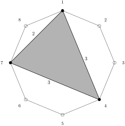

As a class, we will (quietly) tap the tresillo rhythm together.
Section 4.5 Rhythmic Patterns
Our final topic of this chapter is an application of the Euclidean algorithm to the theory of musical rhythm. We will discuss in this section examples of rhythms and language to describe rhythms, which we will use to study a family of rhythms first described by Godfried Toussaint in 2005 and more fully developed by Toussaint and his coauthors in the following paper:
-
Erik D. Demaine, Francisco Gomez-Martin, Henk Meijer, David Rappaport, Perouz Taslakian, Godfried T. Toussaint, Terry Winograd, David R. Wood, The distance geometry of music, Computational Geometry, Volume 42, Issue 5, 2009, Pages 429-454, ISSN 0925-7721, https://doi.org/10.1016/j.comgeo.2008.04.005
This paper is freely available at the doi link above, if you are interested in reading more details.
We will begin by looking at four examples of rhythms, which will help us introduce the notation and language we will need.
The first example we will consider is a rhythm known as the Cuban tresillo, though it is also found in the music of Central and West Africa as well as India. The tresillo consists of three beats during an eight-count, with beats occurring on counts 1, 4, and 7. We can represent this using a "box-like" representation as follows, where a "\(\times\)" denotes a beat onset and a "\(\cdot\)" represents a pause or quiet count:
\begin{equation*}
[\times \cdot \cdot \times \cdot \cdot \times \cdot \, ]
\end{equation*}
We can also represent this rhythm using a "clockwise distance sequence" that records the lengths of the intervals between onsets; for a tresillo, this would be
\begin{equation*}
(3,3,2)
\end{equation*}
where the final \(2\) represents the wrap-around from the last onset back to the first. Finally, we can represent this rhythm using a "clock diagram" as in the following figure.

Checkpoint 4.5.2.
Motivated by the example above, we make the following precise definitions.
Definition 4.5.3.
We consider rhythmic patterns of length \(n\) having \(k\) onsets, that is, \(k\) beats among \(n\) possible beats. The Time Unit Box System, or box-like representation is a sequence of \(n\) symbols consisting of \(k\) "\(\times\)" symbols and \(n-k\) "\(\cdot\)" symbols. The clockwise distance sequence representation is a sequence of \(k\) integers that sum up to \(n\) and represent the lengths of the (circular) distances between pairs of beat onsets. The clock diagram is a graphical representation of the rhythmic pattern on a circle with \(n\) equally spaced points labeled \(1,\ldots,n\) with special dots placed at the positions for beat onsets and the polygon formed from the beat onsets shaded.
Checkpoint 4.5.4.
A single representation is given for each of the following rhythms. Find the box-like, sequence, and clock diagram representations for each.
-
\(\displaystyle (1,4,4,3)\)
-
\(\displaystyle [\times \times \cdot \cdot \cdot \cdot \times \cdot \cdot \times ]\)
The second example we will consider is the Cuban cinquillo rhythm, which is also known as the Malfuf rhythmic pattern of Egypt and the Korean Nong P’yon drum pattern. This is the rhythm with distance sequence \((2,1,2,1,2)\) and box-like representation
\begin{equation*}
[\times \cdot \times \times \cdot \times \times \cdot ]
\end{equation*}
The clock diagram for the cinquillo is below.

The third example we will consider is the clave son rhythm, with sequence \((3,3,4,2,4)\) and box-like representation
\begin{equation*}
[\times \cdot \cdot \times \cdot \cdot \times \cdot \cdot \cdot \times \cdot \times \cdot \cdot \, \cdot ]
\end{equation*}

The fourth example we will consider is the Bossa-Nova rhythm from Brazil, with sequence \((3,3,4,3,3)\) and box-like representation
\begin{equation*}
[\times \cdot \cdot \times \cdot \cdot \times \cdot \cdot \cdot \times \cdot \cdot \times \cdot \, \cdot ]
\end{equation*}

There is a difference between the clave son and the Bossa-Nova rhythm; they have the same number of onsets in the same time, but the spacing is different. The clave son seems less "evenly-spaced" than the Bossa-Nova, and this can be made mathematically precise using the following definition.
Definition 4.5.11.
The clock diagram for a rhythm \(R\) consists of \(k\) designated points for the beat onsets chosen from the \(n\) points on the unit circle given by
\begin{equation*}
\{(\cos(\pi/2-2\pi(i-1)/n),\sin(\pi/2-2\pi(i-1)/n)):i=1,2,\ldots,n\}\, ,
\end{equation*}
which are the \(n\) points of a regular polygon with a vertex at the point \((0,1)\) corresponding to \(i=1\text{.}\) We define the point
\begin{equation*}
P_i:=(\cos(\pi/2-2\pi(i-1)/n),\sin(\pi/2-2\pi(i-1)/n))\, .
\end{equation*}
If \(R\subseteq \{1,2,3,\ldots,n\}\text{,}\) we define the sum of pairwise distance function for \(R\) to be
\begin{equation*}
\mathrm{pairdist}(R):=\sum_{\{i,j\}\subset R}\textrm{dist}(P_i,P_j)
\end{equation*}
where \(\textrm{dist}\) is the usual distance function in \(\R^2\text{.}\) A rhythm with \(k\) onsets among \(n\) possible beats is maximally even if the value of the sum of pairwise distances is maximum among all rhythms with \(k\) onsets among \(n\) possible beats.
The intuition for using the sum of pairwise distance function as a measure of evenness of a rhythm is that when two onsets are close together, they have a small pairwise distance. Thus, when all the onsets are spread out as far as possible, there should be more total distance between pairs. This intuition is formally proved to be correct by Demaine et al., but we will omit their proof as it would be a major detour from our primary focus of applying the Euclidean algorithm to create rhythms. For our purposes, we will accept as a fact that maximizing this function is a good way to maximize evenness of a rhythm.
Checkpoint 4.5.12.
Consider the rhythm given by the sequence \((1,1,2)\) corresponding to the box-like \([\times \times \times \cdot ]\text{,}\) which corresponds to
\begin{equation*}
R=\{1,2,3\}\subset \{1,2,3,4\}
\end{equation*}
having the three points
\begin{equation*}
(0,1), (1,0), (0,-1)
\end{equation*}
on the unit circle. Compute the sum of pairwise distance function for this rhythm.
As another example, for the tresillo rhythm, we have \(R=\{1,4,7\}\) and therefore we have
\begin{align*}
\mathrm{pairdist}(R) \amp =\textrm{dist}(P_1,P_4)+\textrm{dist}(P_1,P_7)+\textrm{dist}(P_4,P_7)\\
\amp \approx 5.1097
\end{align*}
We are now in a position to distinguish between the clave son and Bossa-Nova rhythms. The clave son has sum of pairwise distance function value
\begin{equation*}
15.282
\end{equation*}
while the Bossa-Nova has sum of pairwise distance function value
\begin{equation*}
15.325 \, .
\end{equation*}
Therefore, the Bossa-Nova is closer to even spacing when measured using the sum of pairwise distance function. This matches our intuition from looking at the clock diagrams.
Our goal in the next subsection is to describe a process based on the Euclidean algorithm that generates maximally-even rhythmic patterns. The main result of the article by Demaine et al. is that every maximally-even rhythmic pattern is generated by this process, up to rotation of the clock diagram. If you want to experiment with the sum of pairwise distance function, here is sagemath code that you can use and adapt.
def pointin(i,n):
return([cos(pi/2-2*pi*(i-1)/n),sin(pi/2-2*pi*(i-1)/n)])
def distfn(K,T):
[a,b] = K
[c,d] = T
return(sqrt((a-c)^2+(b-d)^2))
def pairwisedistsum(R):
dists = []
for i in range(0,len(R)-1):
for j in range(i+1,len(R)):
dists.append(distfn(R[i],R[j]))
return(N(sum(dists)))
n = 16
onsets = [1,4,7,11,13]
R = [pointin(j,n) for j in onsets]
pairwisedistsum(R)